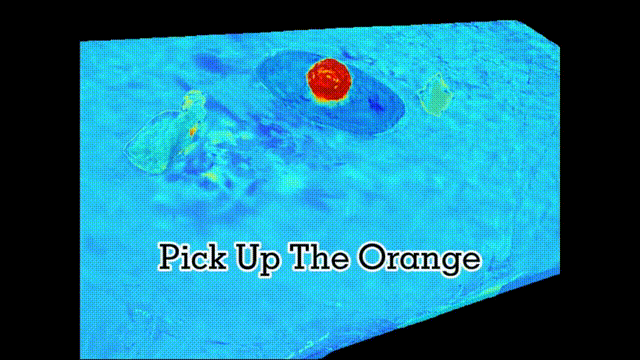
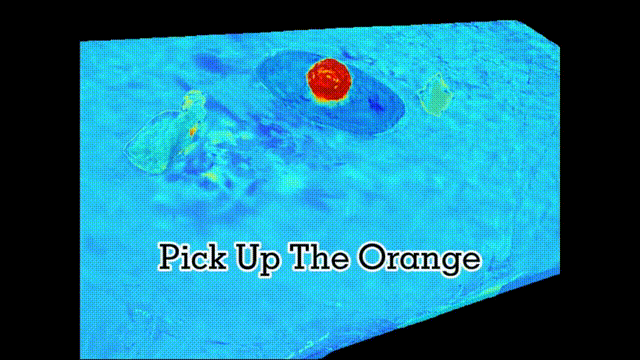

3D Gaussian Field Reconstruction


 

@article{zheng2024gaussiangrasper,
title={GaussianGrasper: 3D Language Gaussian Splatting for Open-vocabulary Robotic Grasping},
author={Zheng, Yuhang and Chen, Xiangyu and Zheng, Yupeng and Gu, Songen and Yang, Runyi and Jin, Bu and Li, Pengfei and Zhong, Chengliang and Wang, Zengmao and Liu, Lina and others},
journal={arXiv preprint arXiv:2403.09637},
year={2024}}